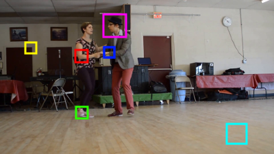
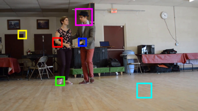

Sample Work
PatchMatch
A Linear Time Nearest Neighbor Field Approximation for Patch Correspondence in Images

Image A |

Image B |
|---|---|
 Image A Select Patches |
 Image B Select Patches |
Finding correspondences between patches (small neighborhoods of pixels in an image) is useful in many graphics and vision applications such as optical flow, hole filling, or super-resolution. Naive exhaustive searches can be slow as they can be O(n2) where n is the number of pixels in any of our input images. PatchMatch is a linear time patch correspondence algorithm that approximates the optimal patch correspondences between two images. For further details and source code, see the PatchMatch research page.
Source code: Github
Image Perforation: Automatically Accelerating Image Pipelines by Intelligently Skipping Samples
Authors: Liming Lou, Paul Nguyen, Jason Lawrence, Connelly Barnes
Accepted into ACM Transactions on Graphics. Presented at ACM SIGGRAPH 2016.
|
Input |
Reference Output |
Image Perforation |
|---|
As image processing applications become more popular on portable devices with limited processing power, there's a need to explore ways to boost speed while taking into account the hardware limitations. We introduce image perforation, a method that allows us to take an arbitrary target image processing program and automatically find optimal ways to trade off imperceptible exactness for speed.
Source Code and Data: Source Code, Training Data, Testing Data
Documents: High Resolution Publication, Low Resolution Publication, Supplemental Results, Presentation Slides
Miscellaneous: BibTeXReskin of arxiv.org
A Modern Aesthetic Applied to arxiv.org
|
A ReactJS Application backed by MongoDB Atlas and MongoDB Stitch.
|
|---|
This is a reskin of arxiv.org that resembles the aesthetics of a newpaper's website aimed at giving it a more modern appearance.
Source code: Github
Live Demo: Demo
Bilateral Filter
A Classic Edge Preserving Low Pass Filter for Image Smoothing and Denoising.
|
Input Image |
Gaussian Denoising |
Denoising via Bilateral Filter |
|---|
Image smoothing and denoising is a very important part of almost all computer vision and graphics algorithms. The issue with using basic Gaussian blurs or other linear filters are that they may cause us to lose important structural data in our image (think about smoothing a checkerboard with a basic Gaussian blur, we would lose our strong edges). In order to maintain edges, the bilateral filter assigns weights to it's neighbors based not only on spatial distance but also on intensity distances as well. This is demonstrated in how the grass in the above images are not blurred into the other objects when processed with bilateral filter.
Source code: Github
Swing Dance Scoring Tabulation
Automatically Score Aggregation via Relative Placement
(work in progress!)

A ReactJS and ExpressJS Application backed by Firebase.
|
|---|
This is a web application for automatically tabulating scores via relative placement that is particularly aimed at aiding those in the Swing Dance community put on more competitions that drive the art form forward.
NB: This is a work in progress.
Source code: Github
Canny Edge Detector
A Classic Edge Detection Algorithm Exploiting Strong Gradients within Images
|
Input |

Edges |
|---|
The Canny Edge Detector is a classic computer vision algorithm used for extracting useful structural information from an image developed by John Canny.
Source Code: Source Code